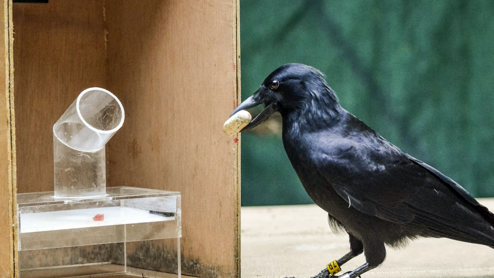
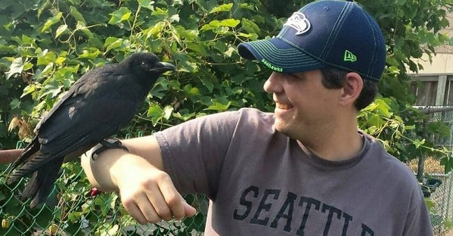

El ave mas inteligente del mundo
El cuervo común (Corvus corax) es el mayor córvido del planeta. Su plumaje negro azabache, iridiscente bajo la luz, lo ha convertido en símbolo de misterio y presagio a lo largo de la historia humana. Capaces de resolver puzzles complejos, fabricar herramientas y reconocer rostros humanos, los cuervos poseen una inteligencia que rivaliza con la de los grandes primates.
Su apariencia es inconfundible: se caracteriza principalmente por su plumaje negro y su cola en forma de rombo. A corta distancia y en buenas condiciones de luminosidad se aprecian reflejos azul violáceos o morados y en las plumas de las partes inferiores un brillo verdoso.
Su pico, robusto y ligeramente curvado, es una de sus principales herramientas para alimentarse y manipular objetos.

Una inteligencia excepcional
Estos córvidos son sumamente inteligentes. Son capaces de imitar el sonido de otras aves como el gorrión y el ruiseñor. Tienen una intuición muy desarrollada y son capaces de resolver complejas situaciones para conseguir su comida.
Atacan a posibles depredadores volando hacia ellos y abalanzándose con sus grandes picos. Los cuervos grandes son diurnos y realizan la mayor parte de su alimentación en el suelo. A menudo almacenan los excedentes de comida, especialmente los que contienen grasa.

Una especie vinculada a la cultura humana
Hay numerosas menciones de cuervos en las leyendas y la literatura. Los cuervos son personajes frecuentes en los mitos y cuentos tradicionales norteamericanos, siberianos y nórdicos. A menudo se los representa como el Trickster, un héroe o el creador de los humanos. Desde hace tiempo, el cuervo está considerado como un ave de mal agüero debido a su plumaje negro, su grito ronco y su necrofagia.
